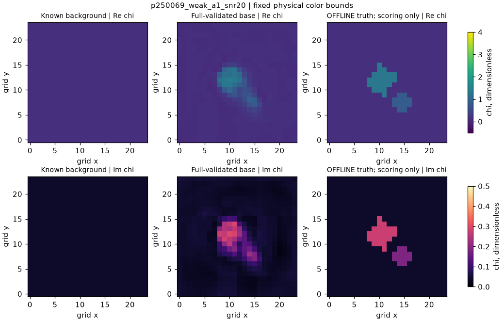
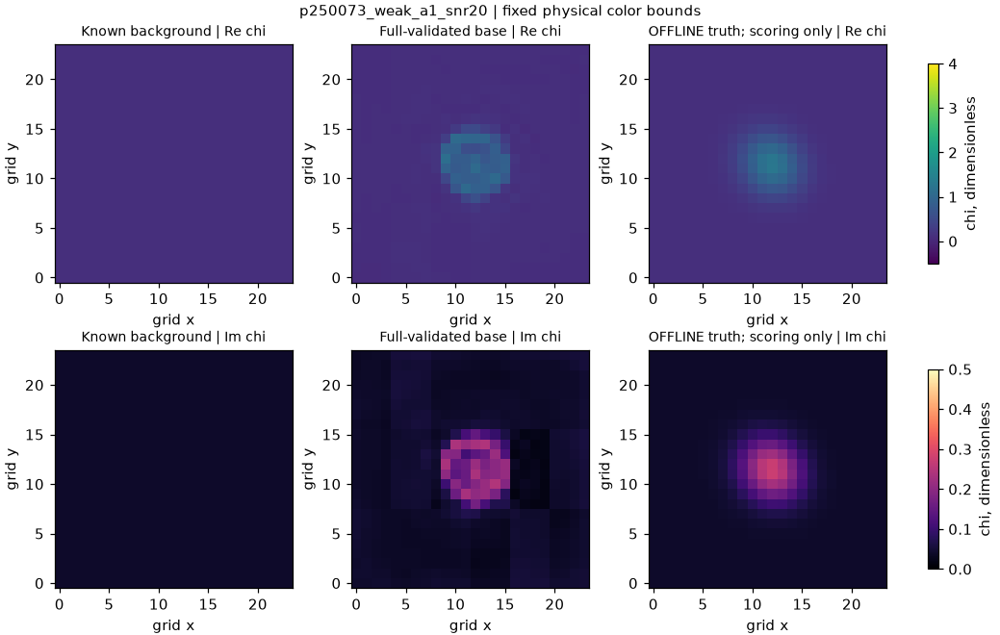
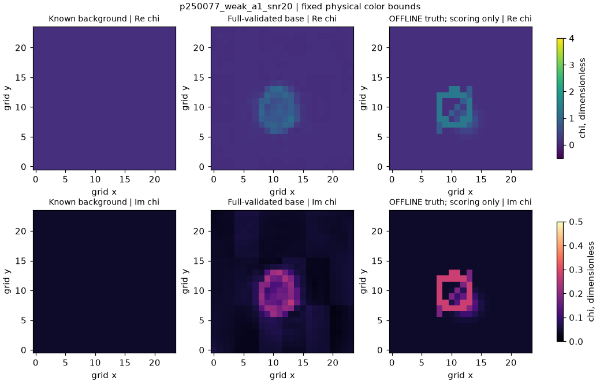

Three exposed 24x24 scalar-TM parents. Candidate-only; no posterior weights. Actual raw/corrected/full-validation arrays, including failures. Shared Re chi [-.5,4] and Im chi [0,.5] scales. Offline truth is evaluation only; these are not general 3D images.


